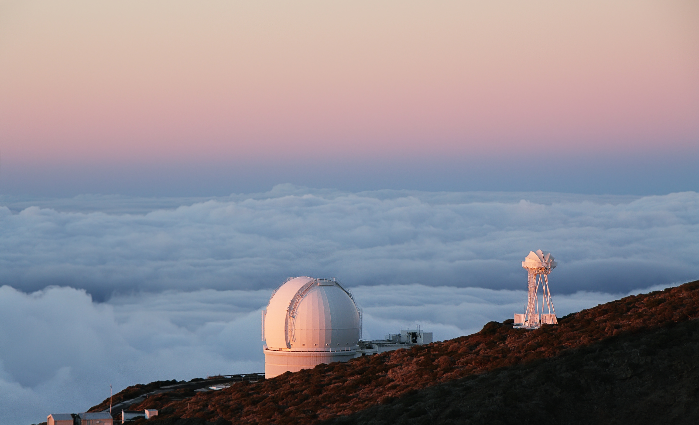

Paul Canton
PhD Astrophysicist
About
Welcome to my little corner of the internet. I am a San Francisco Bay area native and wrapped up my PhD in physics.
I am involved with the Lunar Sooners as a founding member, and I often host the University of Oklahoma Public Star Parties. The Lunar Sooners put on lectures, question and answer panels, educational demonstrations, and star gazing events statewide. Please get in touch if you would be interested in having us for an event, and if you're so graciously willing we appreciate any donations toward the cause. The OU star parties are held free of charge every Wednesday of the school semester, weather permitting, at the OU observatory on campus. Take an evening off and come look through telescopes. We would love to show you around the night sky!
These days my research leverages white dwarf stars as probes of interesting astronomical phenomena. In the past I've dabbled in studies of supernovae, photodissociation regions, and top quark physics. In the future I very much look forward to working at the intersect of data analysis and observing support or instrumentation in a team environment.

In my work I make frequent use of FORTRAN77, Python, and IRAF.
My interests are much broader than the scope of the subfield in which I currently work. I follow current research in supernovae and developments in asteroid mining, photovoltaics, and instrument design.
Research
I take spectroscopic measurements for the ELM survey on the KP 4m and Hale 5m telescopes on roughly a biannual basis. With the exception of a few things we've learned from those really elusive inverse beta-decay neutrino captures from SN1987A, everything we know about the universe beyond the edge of the solar system has been discovered by studying light that's traveled far and wide to reach us. However, one of the last predictions yet to be verified from Einstien's theory of general relativity is that of gravitational wave emission. To observe gravitational waves is to probe the universe in a way that's never been done before which in turn will open up rich new information both on galactic and cosmological scales...
Publications
My published literature can be found here, whereas more recent submitted work and white papers can be found on the archive.